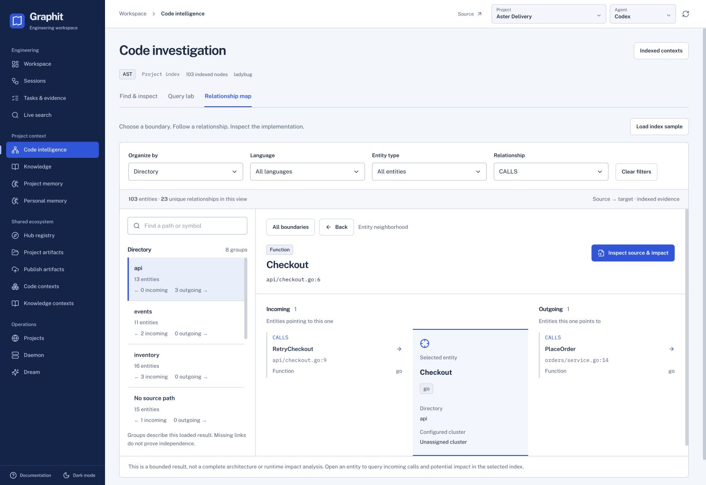
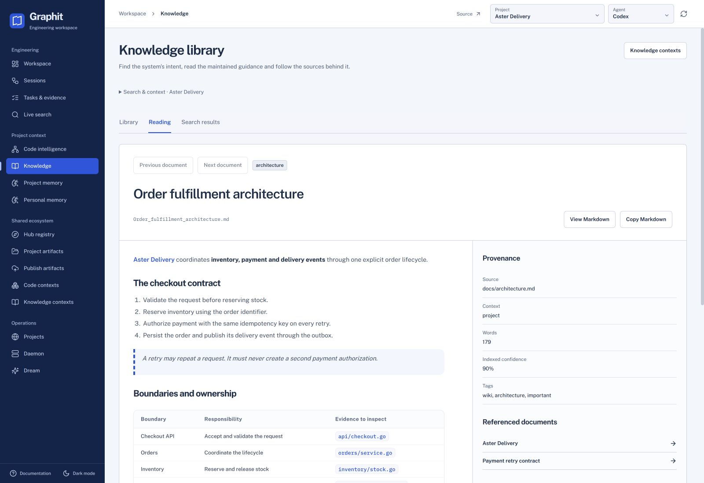
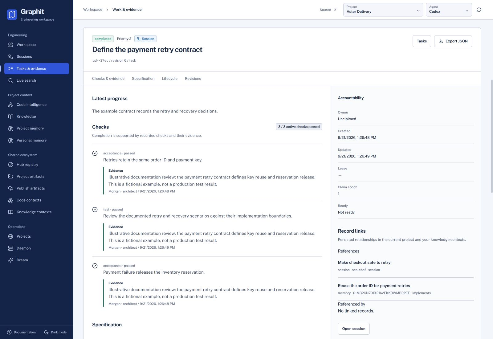
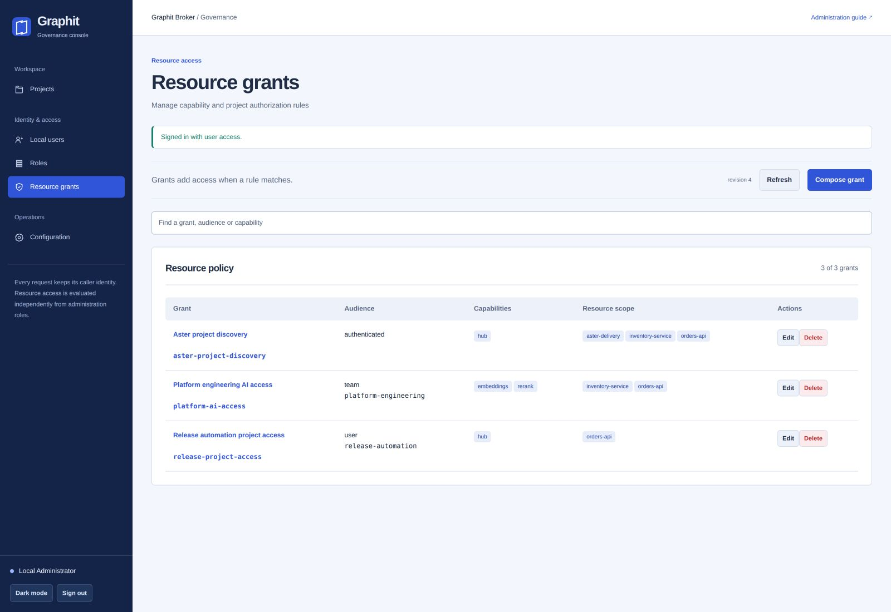

Understand before changing
Find the symbols, relationships and documentation that matter. Read their sources. Make a change with the system in view.
Explore code intelligenceThe engineering layer for AI development
Give every agent a shared understanding of your software. Preserve the knowledge you have already paid AI to acquire, coordinate the work and inspect the evidence behind each delivery.
Local-first. Open source. Built for the tools you already use.
The model reasons. The framework keeps the contract.
Built around the work
Graphit focuses on software engineering, not optimizing token counts. Maintain knowledge, decisions and work across sessions so each delivery builds on what your agents have already learned.
Find the symbols, relationships and documentation that matter. Read their sources. Make a change with the system in view.
Explore code intelligencePreserve decisions, scope and the next action. A new agent or session continues the work without reconstructing it from a conversation.
Understand sessions and tasksClaims establish ownership. Dependencies establish order. Checks and evidence establish what it means for a task to be complete.
Read the work contractReasoning has room to explore.
LLMs remain probabilistic. Graphit adds explicit state, reproducible queries and deterministic lifecycle rules for task ownership and completion.
It makes the engineering process inspectable. The quality of a change still depends on the requirements, reviews and checks you define.
Graphit Code ships 45 AST profiles: 44 language and format entries, plus embedded PL/pgSQL. Each profile defines the structure and relationships it can extract.
Entities and relationship coverage vary by profile; a registered extension does not guarantee every syntax variant. Supported embedded scripts and styles retain their source locations. Markdown documentation belongs to Knowledge.
Read the language, extension and parser matrixOne system, clear responsibilities
Connect what the software is, why it works that way, and what needs to happen next.
Bring shared capabilities to the team with identity and access evaluated on each request.
Inside the workspace
Real Code and Broker interfaces, shown with Aster Delivery: an invented project, team and set of policies. No customer workspace or production data.

Move from a boundary to incoming and outgoing relationships, then inspect the indexed source. Counts describe the loaded result.

Read the checkout contract beside its source and document relationships. Carry that understanding into the next investigation.

Inspect the contract, recorded checks and linked decisions. The demonstration's review evidence is illustrative, not a production test result.

Review team and service access by capability and project. Resource grants remain separate from administrative roles.
Start at your scale
Index a repository, keep decisions in memory and carry work forward through durable sessions. Use the agent and model that fit your workflow.
Start locallyGive your team versioned context and reusable artifacts. Coordinate agents working in a shared project through explicit claims, dependencies and evidence.
Explore team deploymentUse the Broker to verify identities and authorize shared projects and services. Distribute context through the Hub while preserving explicit access rules.
Read the governance guidePut it to work
Install Graphit, initialize a project for your agent, and make its engineering context available.
Full getting started guidecurl -fsSL https://raw.githubusercontent.com/graphit-labs/graphit-code/main/install.sh | sh
graphit setup
cd your-project
graphit init --agent codex
graphit sync
graphit uiirm https://raw.githubusercontent.com/graphit-labs/graphit-code/main/install.ps1 | iex
graphit setup
cd your-project
graphit init --agent codex
graphit sync
graphit uiVERSION=latest
docker pull "ghcr.io/graphit-labs/graphit-code:${VERSION}"
# Loopback trial without Broker browser login
docker run -d --name graphit \
-p 127.0.0.1:8080:8080 -p 127.0.0.1:8081:8081 \
-e GRAPHIT_UI_AUTH_ENABLED=false \
-v graphit-global:/home/graphit/.graphit \
"ghcr.io/graphit-labs/graphit-code:${VERSION}"
docker exec graphit cat /home/graphit/.graphit/daemon/mcp.key
For external UI access, Docker enables Broker browser login by
default. Configure a Broker provider with dynamic client
registration. Set GRAPHIT_UI_AUTH_PUBLIC_URL to the
HTTPS origin and
GRAPHIT_UI_AUTH_COOKIE_ENCRYPTION_KEY to the same
random secret string of at least 32 bytes on every instance. See
the
authentication guide
and
container guide.
git clone https://github.com/graphit-labs/graphit-code.git
cd graphit-code
make install
graphit setupGo deeper
Start with one project. Carry the discipline forward.
{kind=link}
{kind=link}
{kind=link}
{kind=link}